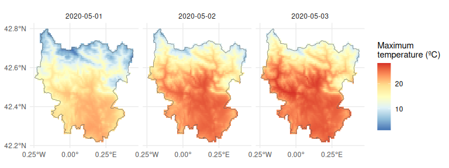

Easy access to high-resolution daily, monthly and annual climate data for Europe
Get high-resolution (1 km) daily, monthly and annual climate data (precipitation, and average, minimum and maximum temperatures) for Europe from the European climatic database hosted at the Institute of Silviculture, University of Natural Resources and Life Sciences, Vienna, Austria. Climate data are available from 1950 onwards. These data are updated annually (generally in July) to include information up to the previous year (e.g., the July 2026 update includes new data up to the end of 2025).
This climate dataset was originally built by A. Moreno & H. Hasenauer and further developed by W. Rammer, C. Pucher & M. Neumann.
See this document for more details on the initial development and characteristics of the climatic dataset.
See this document for the updates of the last version which includes annual updates.
See this document for details on previous version (v4) of the dataset.
In this R package we implemented Cloud-Optimised Geotiffs so that we can obtain daily, monthly and climate data for thousands of sites/dates within seconds/minutes, without having to download huge rasters. But if you need to obtain data for large areas, please download the rasters from the FTP server (ftp://palantir.boku.ac.at/Public/ClimateData/) and extract the values locally rather than using this package, so as not to saturate the file server. For that, you may use a FTP client such as FileZilla.
Please, be aware that data will be updated in an annual basis and values for past years might have small adjustments according to the annual spring releases of E-OBS data. If you need to guarantee reproducibility of your analyses, please save the data locally as some data might change without notice after such updates.
For a detailed description of {easyclimate}, please read this paper (open access version here) or visit the package website.
Installation
Stable version from CRAN:
install.packages("easyclimate")Development version from GitHub:
# install.packages("remotes")
remotes::install_github("VeruGHub/easyclimate")Examples
Obtain a data frame of climatic values
To obtain a data frame of daily climatic values for point coordinates:
library(easyclimate)
coords <- data.frame(lon = -5.36, lat = 37.40)
prec <- get_daily_climate(coords,
period = "2001-01-01:2001-01-03",
climatic_var = "Prcp",
version = 4) # default| ID_coords | lon | lat | date | Prcp |
|---|---|---|---|---|
| 1 | -5.36 | 37.4 | 2001-01-01 | 8.30 |
| 1 | -5.36 | 37.4 | 2001-01-02 | 0.00 |
| 1 | -5.36 | 37.4 | 2001-01-03 | 3.38 |
Obtain a raster of climatic values
To obtain a (multi-layer) raster of daily climatic values for an area:
library(terra)
## Download the polygon contour of a region
sobrarbe <- mapSpain::esp_get_comarca(comarca = "Sobrarbe")
## Coordinates must be in lonlat
sobrarbe <- project(vect(sobrarbe), "EPSG:4326")
## Download Tmax values for that region between 1st and 3rd May 2020
sobrarbetemp <- get_daily_climate(
coords = sobrarbe,
climatic_var = "Tmax",
period = "2020-05-01:2020-05-03",
output = "raster"
)The output (sobrarbetemp) is a SpatRaster with 3 layers (for each of 3 days):
sobrarbetemp
#> class : SpatRaster
#> dimensions : 70, 82, 3 (nrow, ncol, nlyr)
#> resolution : 0.008333333, 0.008333333 (x, y)
#> extent : -0.2416667, 0.4416667, 42.21667, 42.8 (xmin, xmax, ymin, ymax)
#> coord. ref. : lon/lat WGS 84 (EPSG:4326)
#> source(s) : memory
#> names : 2020-05-01, 2020-05-02, 2020-05-03
#> min values : 2.34, 4.42, 6.91
#> max values : 22.89, 25.03, 26.87Let’s make a map. First using terra:
plot(sobrarbetemp, col = rev(RColorBrewer::brewer.pal(9, "RdYlBu")),
smooth = TRUE, nc = 3)
Now using ggplot2 and tidyterra:
library(ggplot2)
library(tidyterra)
ggplot() +
geom_spatraster(data = sobrarbetemp) +
facet_wrap(~lyr, ncol = 3) +
scale_fill_distiller(palette = "RdYlBu", na.value = "transparent") +
geom_spatvector(data = sobrarbe, fill = NA) +
labs(fill = "Maximum\ntemperature (ºC)") +
scale_x_continuous(breaks = c(-0.25, 0, 0.25)) +
scale_y_continuous(breaks = seq(42.2, 42.8, by = 0.2)) +
theme_minimal()
Visit the articles of the package website for more extended tutorials!
CITATION
If you use easyclimate, please cite both the appropriate data source and the package as:
Moreno A, Hasenauer H (2016). “Spatial downscaling of European climate data.” International Journal of Climatology, 1444–1458. https://doi.org/10.1002/joc.4436.
Pucher, Christoph (2026). Description of Downscaled European Climate Data. figshare. Online resource. https://doi.org/10.6084/m9.figshare.33078053.v1.
Pucher C (2023). Description and Evaluation of Downscaled Daily Climate Data Version 4. https://doi.org/10.6084/m9.figshare.22962671.v1.
Cruz-Alonso V, Pucher C, Ratcliffe S, Ruiz-Benito P, Astigarraga J, Neumann M, Hasenauer H, Rodríguez-Sánchez F (2023). “The easyclimate R package: Easy access to high-resolution daily climate data for Europe.” Environmental Modelling & Software, 105627. https://doi.org/10.1016/j.envsoft.2023.105627.